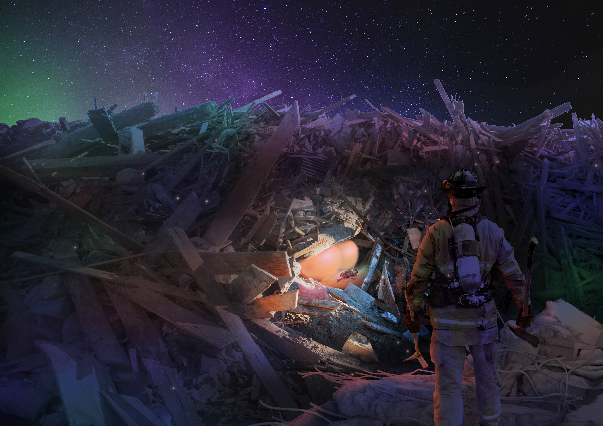
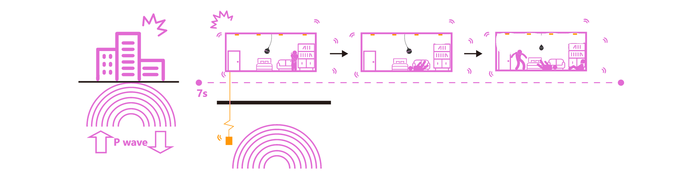
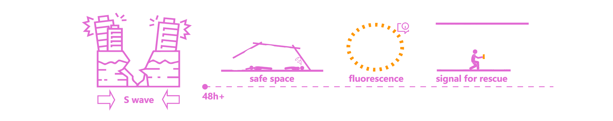
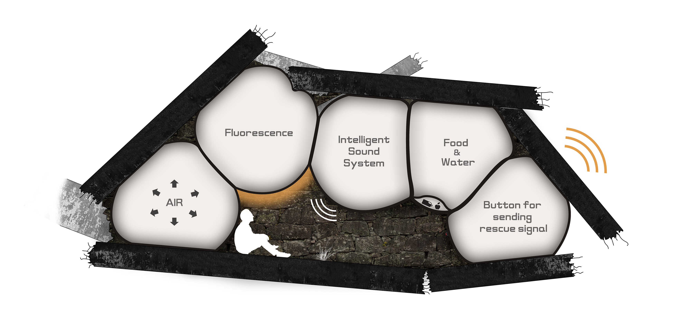
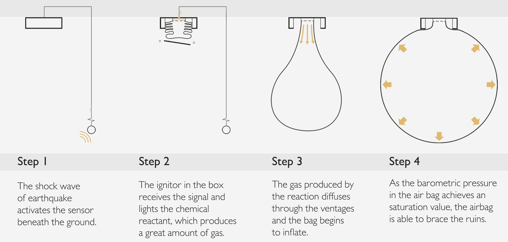
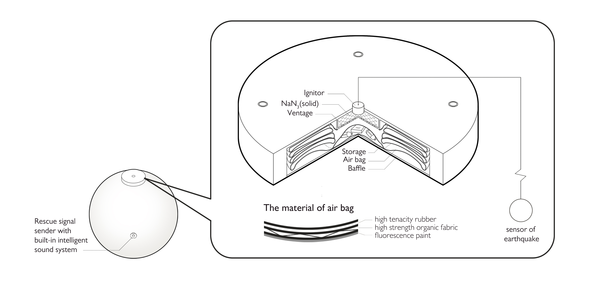
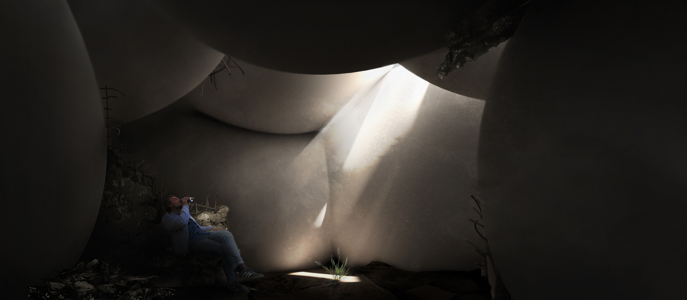

Keywords: disaster response, temporary space
WINNERof Shelter 48h International Competition of Eleven Magazine
[Group Work] with Shiyan Chen, Songzi Zhou
[Time] November, 2017

+Description
Walls cracked, the earth was torn apart, and people crushed and displaced, earthquakes always possess the destructive power to destroy peaceful life without mercy. Just in seconds, buildings are reduced to ruins and death tolls multiply. Is there a way to shelter people from collapsing buildings? Is there a way to offer them with provision in such an emergency? Is there a way to help them sustain physical and mental strength in the following 48 hours?
In human’s battle against earthquakes, WE decide to design an adequate shelter to sustain life at risk and to buy time for post-calamity rescue. Inspired by safety airbag, we design our “Rubble Bubble” for buildings. When an earthquake breaks out, some sensor installed underground will be triggered to activate the airbags hidden in the ceilings. These airbags, or “BUBBLES”, will inflate immediately and rapidly to their fullest round shape, supporting the precarious walls and leaving some safety space for people. The BUBBLES, with barometric pressure increasing inside, serve as a cushion reducing impact force from all directions. And space provided will ease the suffocation of the buried. Our BUBBLES will work for 48 hours or longer.
Besides, our BUBBLES are attached with an emergency kit, a SOS device and an intelligent sound system. The trapped people can survive with the help of food and water in storage and send signals to the rescuers. To alleviate people’s fear in front of the natural disaster, BUBBLES are painted in warm colour and can play soft music. Fluorescent pigment brings light to victims trapped in the darkness and provides a better condition for the post-calamity rescue. And music can calm frightened people as a consolation. We hope these devices will help to strengthen their courage and desire for survival.
In face of earthquakes, every second counts. Our RUBBLE BUBBLE can be deployed immediately and effectively in the very aftermath of the calamity. The earthquake shelter is designed to sustain lives not only the moment earthquakes happen but also the next 48 hours and beyond.
+Concept
When the car crash happens, the airbag can provide the occupants a soft cushioning and restraint to prevent any impact or impact-caused injuries between the falling occupant and the interior of the vehicle.
+The Golden 7s

The P-wave travels faster than other waves through the earth. When the P-wave arrives, people have about 7s to react before other waves come, which may cause more seriouse effects. During the golden 7s, our device popup airbags instantly to protect people from the swinging pendants and even the falling floors.
+The Next 48h

After the earthquake, buildings collapse and the people who fail to escape will be buried under the ruins. At this time, the airbags squeeze each other and form a space for people to breathe, which becomes a shelter the next 48 hours. Also, the airbags are painted with fluorescence pigment and equiped with rescue signal sender, which provides more convenience for rescue. The warm light given out by the airbags will comfort people in fears.
+Functions

1) Support: The pressure force of air enables the bag to support the weight of broken floors, which protects people from being buried in the ruins.
2) Illumination: The airbag is painted with fluorescence pigment on the surface, it can give out warm light in the darkness to comfort people mentally.
3) Audio Help: A tiny intelligent sound system is equiped in the airbag, which can play music or audio about self saving to help people suffer.
4) Supply: Food and water is stored in some airbags, which provides the basic need for survival.
5) Location:
The people trapped in the ruins can press the button on the airbag to send rescue signal, which enables the rescuers to locate them accurately.
+Structure & Triggering


Once the sensor is triggered by the wave of earthquake, the airbag will inflate and form a life-sustaining space, with a range of funtions that may help victim suffer from the predicament before the rescue arrives.
+Shelter Space
